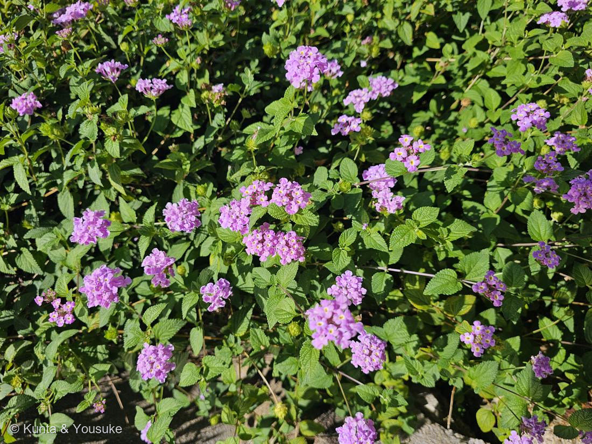

地図を読み込んでいるよ…
🔍 写真も地図も、押しているあいだ拡大して見られるよ（スマホは指を置いてすこし待ってね）。
🌍 の地図＝この子がもともと自生している場所を緑に。南米（ウルグアイ〜ブラジル・アルゼンチン）。
学名の montevidensis ＝ウルグアイの首都モンテビデオ。地図のまんなかあたりが、名前の場所だよ。
⚠ 地図は国（日本と中国だけ県・省）までしか塗れないから、ほんとうの分布より広く見えていることがあるよ。地図はだいたいの場所。正確なところは、上の文を見てね。
コバノランタナ
Lantana montevidensis (Spreng.) Briq.
別名 · ヒメランタナ／トレーリングランタナ（匍匐性ランタナ）
クマツヅラ科 · Verbenaceae
名前と学名の由来
- Lantana（ランタナ）＝もともとはガマズミの仲間（Viburnum）を指したラテン語の古い植物名。花のかたまりの姿が似ていたことから属名に転用された（シチヘンゲ L. camara と同じ属）。
- montevidensis（モンテビデンシス）＝「モンテビデオ（Montevideo、ウルグアイの首都）の」。原産地にちなむ。
この植物のこと
- クマツヅラ科の匍匐性（ほふく＝地をはう）の低木。南米（ウルグアイ〜ブラジル・アルゼンチン）原産。枝を長く横にのばして地面や壁をおおうように広がり、グラウンドカバーによく使われる。
- シチヘンゲ（Lantana camara／No.004）との見分け：
- コバノランタナ＝這う性質・葉が小さめ（和名「小葉の」）・花のかたまりは基本ひと色（藤むらさき／ライラック色）で中心に小さな黄〜白の目。七変化のような大きな色変わりはしない。
- シチヘンゲ＝立ち上がってよく茂り、一つのかたまりの中で黄→ピンク→赤に色が変わる（七変化）。
- つまり「同じランタナの色ちがい」に見えても、実は近い別種のことが多い。この写真は這う性質・小さい葉・単色の花から、コバノランタナと見られる。
- 寒さにやや強く、暖地では垣根や斜面によく植えられる。花には蝶がよく集まる。ランタナの仲間なので、未熟な実などは口にしない方がよい。